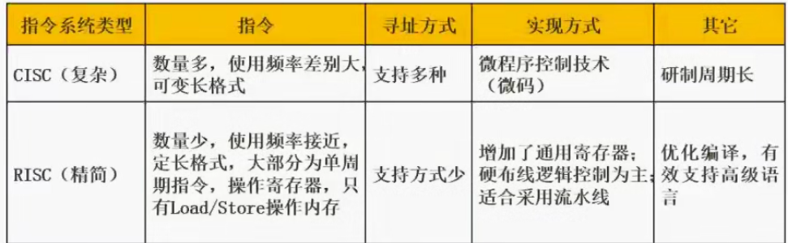

一、CISC与RISC
CISC:复杂指令集系统，进一步增强原有指令的功能。导致机器指令系统越来越复杂
RISC：精简指令集计算 基本思想:减少指令总数和简化指令功能 降低复杂度 使指令能单周期执行。
RISC关键技术: (1)重叠寄存器窗口技术 （2）优化编译器技术 (3)超流水线及超标量技术（4）硬布线逻辑与微程序在微程序技术中相结合。

二、指令流水处理
对指令流水线性能的度量主要有吞吐率，加速比和效率等指标。
吞吐率是指单位时间内流水线所完成的任务数或输出结果的数量，
最太吞吐率则是流水线在达到稳定状态后所得到的吞吐率，它取决于流水线中最慢一段所需的时间，所以该段成为流水线的瓶颈。流水线的加速比定义为等功能的非流水线执行时间与流水线执行时间之比，加速比与吞吐率成正比，如果流水线断流，实际吞吐率将会明显下降，则加速比也会明显下降。 流水线的效率是指流水线的设备利用率，从时空图上看效率就是n个任务所占的时空区与m个段总的时空区之比。因此要使加速比和效率最大化应该流水线各级采用相同的运行时间。另外，流水线釆用异步控制并不会给流水线性能带来改善，反而会增加控制电路的复杂性。
流水时间计算:
理论公式:

实践公式: (k+n-1)*t k表示流水线周期数 在题中 取指 分析 执行 共3个周期
3*2+99*2
吞吐率:

加速比: